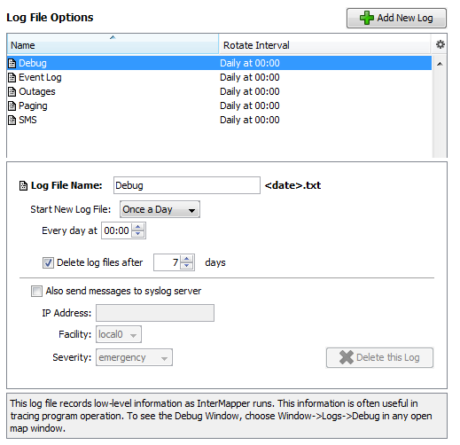

Log File Preferences
InterMapper writes information to log files about various events. Use the log files to review the events surrounding a particular problem, helping you to troubleshoot the problem more effectively.
To view an existing log file:
To view and edit the preferences for log files:
- From the Edit menu, choose Server Settings... The Server Settings window appears.
- Click Log Files. A list of log files appears in the right panel, showing the current Log File preferences for the selected log file.
Setting Preferences for Log Files

The Log File preferences pane shows a list of currently defined log files with properties for the selected file.
- To see a brief explanation of the function of a log file, click the log file in the list. The explanation appears in the lower panel of the Preferences pane.
- To add a log file, click Add New Log. The Log File Preferences for the new log file appear.
- To edit a log file definition, click to select a log file definition. The properties for the selected log file appear. The Log File Preferences for the selected log file appear.
- To delete a log file, click to select a log file definition, then click Delete this Log.
The log file definition disappears from the list.
Note: The Debug Log, Event Log and Outages Log cannot be deleted.

Log File Preferences
The example above typical log file preferences. It shows the names of the log files, and their rotation intervals.
To add a new log file:
- Click Add New Log. The Log File preferences for the new log file appear.
- Set the log file preferences as described below.
To edit preferences for an existing log file:
- Click to select the log file. The Log File preferences for the selected log file appear.
- Set the log file preferences as described below.
Setting Log File Preferences
Log File Name - Set the filename (actually the prefix) for the log file. You can enter up to 14 characters (see Log File Naming and File Format below.) The file is given a .TXT extension, and can be edited with any text editor.
Start New Log File - Use these settings to specify how often and at what point in a log cycle the current log file is closed and a new one is opened. This allows you to break the log files into convenient sizes and/or time epochs. Choose from these options:
- Never
- Once daily
- Twice daily
- Once weekly
- Twice weekly
Delete log files after __ days/weeks - Check this box to force InterMapper to delete old log files automatically after a certain date.
Note: Each time InterMapper starts a new log file, it checks to see if any log files should be deleted. On platforms where the file creation date is available, it is used to determine whether a log file should be deleted. If the creation date is not available, the file's last modification date is used.
Also send messages to syslog server
Click this checkbox to specify that all log file entries be sent to
a syslog server. Set the values for:
- IP Address - enter an IP address for the syslog server.
- Facility - choose a value to match your local system conventions.
- Severity - choose a value to match your local system conventions.
Redirecting Log Entries
By default, all entries go to the built-in Event Log file. You can redirect streams of log entries from InterMapper's Remote Server, Web Server, or Telnet server to a particular log file (and syslog server). This can be useful, for example, for sending all web access events one file, and all outage events to a different file.
To redirect a log entry stream:
- Create a new log file definition for the file you want to receive the log entries, as described above.
- From the Edit menu, choose Server Settings... The Server Settings window appears.
- In the left panel of the Server Settings window, click to choose the server (Remote, Web, or Telnet) whose log entries you want to send to a different log file. The panel for the selected server appears.
- In the Send Log File Entries to menu, choose the log file you created to receive the log entries.
- Click OK. All log file entries for the selected server are redirected to the new log file.
Log File Naming and File Format
Log files are saved in text format in the InterMapper Settings:InterMapper Logs folder. Each file has a user-defined prefix that describes its function, and ends with a suffix of .yyyymmddhhmm.txt, where the suffix is the (four-digit) year, month, day, hour and minute when the file was created. The prefix can be up to 14 characters in length.
Log File Sources
Log information comes from several sources, including:
- Up and down entries for the devices being logged
- Hits on the built-in web server
- Connections to the InterMapper RemoteAccess and Telnet server
- InterMapper's own internal status and error messages
Three built-in log files are always present, and cannot be deleted:
- The Event Log file - when you first launch InterMapper, the Event log file receives all entries from all sources. You can divert certain streams to other log files.
- The Outages file - contains entries that describe the start and end times of outages, as well as their duration. This stream of entries cannot be redirected to any other log file.
- The Debug file - displays certain debugging information, as described in The Debug Window.